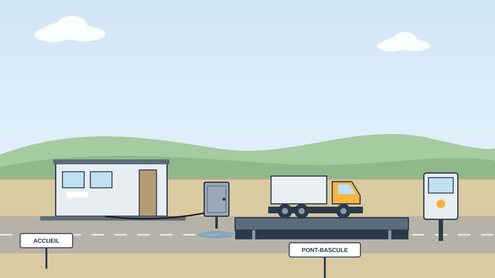
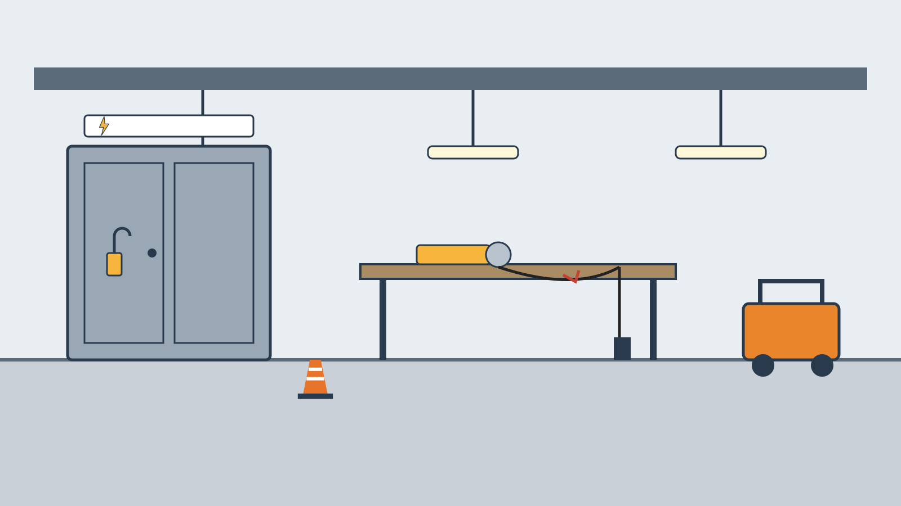
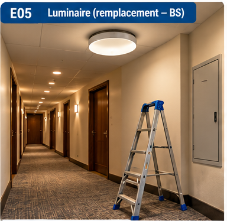
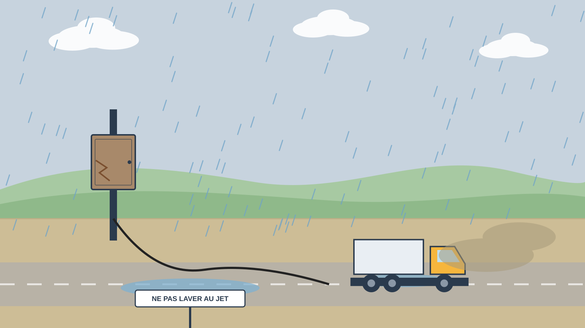
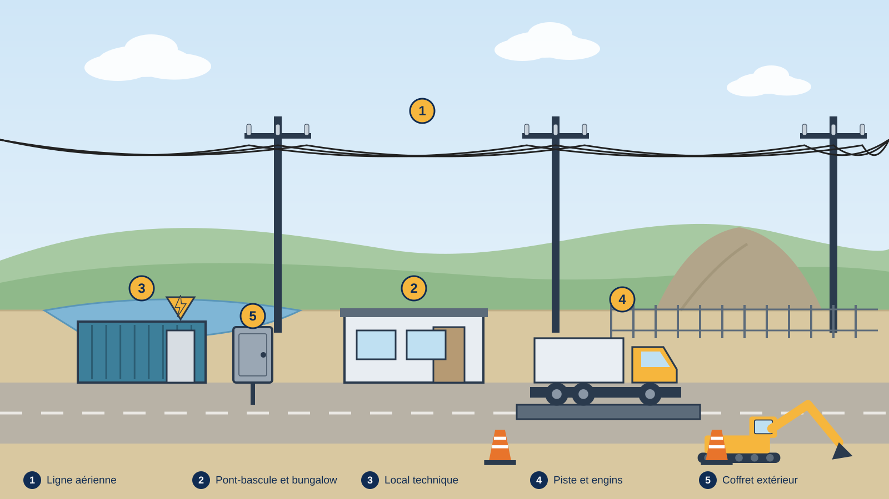
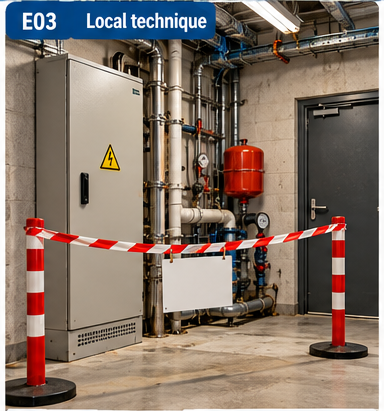
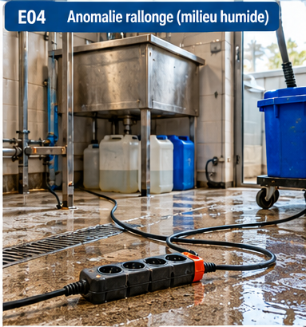

Cas par métier
Des situations génériques, pour s’entraîner à raisonner. Elles ne décrivent pas vos installations : celles-ci se précisent en séance avec le formateur.
Conduite d’engins et transport
Conducteurs d’engins, chauffeurs, personnel au sol : lignes aériennes, câbles enterrés, zones extérieures, poussière et pluie.


Une ligne traverse le secteur où l’engin doit évoluer ou basculer une benne. Qui décide de la zone de travail ? Quelle précaution avant de commencer, et qui prévenir ?
Le godet ou la benne vient de toucher une ligne. Que fait le conducteur ? Que fait le personnel au sol ? Qui alerter, et à quelle distance reste-t-on ?
Un câble, ou un fourreau orange, apparaît lors d’un terrassement. Quel est le premier réflexe ? Qui prévenir avant de reprendre ?
Une rallonge qui alimente un équipement traverse la piste. Quels risques ? Qui peut la remplacer ou la protéger ?
Accueil, pesée et contrôle des apports
Bungalow d’accueil, pont-bascule, borne, informatique : des installations légères, souvent en extérieur.

L’afficheur s’éteint. Vous soupçonnez le disjoncteur du coffret voisin. Avez-vous le droit de le réarmer ? Selon quelles instructions ?
Vous trouvez de l’eau dans un coffret de prises à l’extérieur après la pluie. Que faites-vous, et qui prévenez-vous ?
Dans le bungalow, un radiateur d’appoint, une bouilloire et un ordinateur sont branchés sur la même multiprise. Quels risques ? Qui décide de la solution ?
Une odeur de brûlé monte d’un tableau électrique du bungalow. Quelle conduite à tenir ?
Maintenance et atelier
Entretien des engins et des installations de traitement : outillage portatif, éclairage, coffrets de chantier, groupes électrogènes.

Le câble d’une meuleuse est entaillé. Que faites-vous ? Qui la répare ou la remplace ?
Le coffret qui alimente l’atelier déclenche à chaque démarrage d’un outil. Réarmer encore est-il une bonne idée ? Qui diagnostique ?
Un groupe électrogène alimente un équipement. Qui peut le raccorder à une installation ? Que faut-il vérifier avant de le démarrer ?
Vous devez remplacer une lampe dans un luminaire en hauteur. Quelles étapes avant de monter ? Faut-il couper le circuit ?
Personnel polyvalent
Entretien des locaux, espaces verts, gardiennage, locaux techniques : des tâches variées, des locaux très différents.


Vous devez remplacer une lampe dans un luminaire de plafond. Quelles étapes avant de monter ? Faut-il couper le circuit ?
Vous repeignez un local technique avec une armoire électrique. Comment organiser le travail avec un symbole B0 ?
Vous nettoyez au jet un local où se trouve un coffret de prise. Quel risque, et quelle précaution de base (B0) ?
Un câble d’alimentation est écorché sur un équipement. Que faites-vous ? Qui le répare ou le remplace ?
Scènes à analyser

Trois images génériques pour s’exercer au repérage. Pour chacune : que voyez-vous ? qu’est-ce qui peut devenir dangereux ? qui peut agir, et que fait-on si l’on n’est pas habilité ? Réflexe B0 / H0 / H0V : ne rien toucher, ne pas intervenir, signaler.

À repérer : Accès à une zone électrique, interventions non autorisées, balisage.

À repérer : Eau à proximité, rallonge au sol, détériorations et trébuchement.
À repérer : Travail en hauteur, chute de plain-pied, éclairage insuffisant.